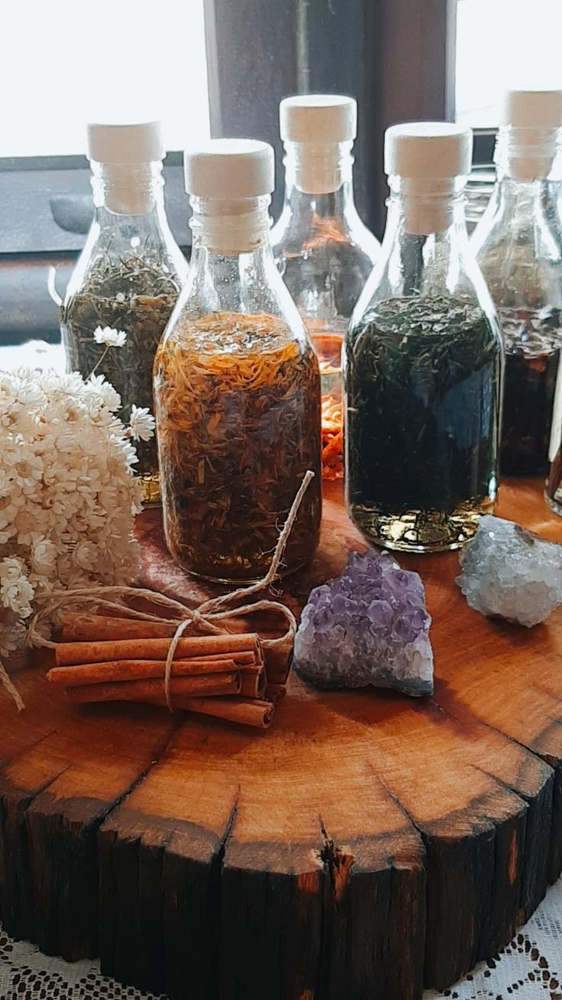

Alquimia de contenção, proteção e magnetismo
Garrafasde Poder
Microcosmos artesanais criados para dialogar com uma intenção específica.
Ver na loja
NythraAteliê

“No vidro, a intenção se torna imortal. Selamos a erva, o mineral e o segredo, criando um microcosmo onde a magia trabalha sem cessar.”— Fragmento do grimório Nythra01 / Essência
O que habita no vidro?
Conhecidas na tradição como witch bottles, as Garrafas de Poder são antigos instrumentos de contenção, proteção e magnetismo. No Nythra Ateliê, cada peça é única e criada para dialogar com uma intenção específica.
Ervas, minerais, cristais, óleos alquímicos e símbolos de poder são reunidos em uma composição ritualística, selada com cera consagrada. Mais do que objetos decorativos, as garrafas são concebidas como filtros energéticos para o lar, o altar ou o espaço de prática.
Cada garrafa pede tempo. Sua preparação respeita a secagem das ervas, as regências escolhidas e o período de consagração. Uma leitura orienta quais elementos serão reunidos para o propósito apresentado.
Finalidades
e caminhos
Finalidades que podem orientar a composição e os elementos reunidos em cada criação.
Prosperidade
Quebra de inveja
Fertilidade
Harmonia familiar
Foco e estudo
Magnetismo
Contenção energética
03 / Orientações
Uso e cuidado
Cada Garrafa de Poder acompanha orientações próprias de ativação e posicionamento. Conforme a finalidade, ela pode ser mantida em local discreto, colocada no altar, exposta à luz ou destinada a outra forma específica de interação.
Loja oficial
Selea sua intenção
Conheça as Garrafas de Poder e as possibilidades disponíveis no Nythra Ateliê.
Conhecer as garrafas